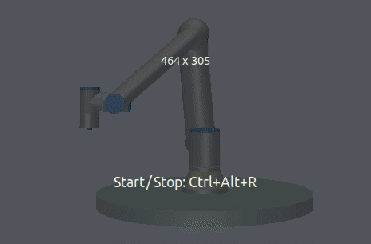

Examples¶
This section contains examples of how to use the RTDE Control Interface the RTDE Receive Interface and the RTDE IO Interface.
Warning
It is your own responsibility to verify that the movements performed by these examples are collision-free and safe to execute on the robot. When in doubt, use the simulator provided by Universal Robots.
CMake Example¶
Once you have installed the ur_rtde library. You can use the cmake command find_package() to locate the library. Here is an example of how to find the library and link it against your C++ executable.
cmake_minimum_required(VERSION 3.5)
project(ur_rtde_cmake_example)
find_package(ur_rtde REQUIRED)
add_executable(ur_rtde_cmake_example main.cpp)
target_link_libraries(ur_rtde_cmake_example PRIVATE ur_rtde::rtde)
if the library is not installed or installed to a none standard system path, use one of the following methods:
Call CMake with
-Dur_rtde_DIR=/path/to/ur_rtdeSet the path in
find_package():find_package(ur_rtde REQUIRED PATHS “/a/possible/path/to/ur_rtde” “/another/possible/path/to/ur_rtde”)
The path to ur_rtde is the one where ur_rtdeTargets.cmake can be found. For a none install it should be
/path/to/ur_rtde/Build/ur_rtde. For an install it is /path/to/lib/cmake/ur_rtde.
Basic use¶
Simple example using the RTDE Control Interface to move the robot to a pose with the moveL command.
C++:
// The constructor simply takes the IP address of the Robot
RTDEControlInterface rtde_control("127.0.0.1");
// First argument is the pose 6d vector followed by speed and acceleration
rtde_control.moveL({-0.143, -0.435, 0.20, -0.001, 3.12, 0.04}, 0.5, 0.2);
Python:
import rtde_control
rtde_c = rtde_control.RTDEControlInterface("127.0.0.1")
rtde_c.moveL([-0.143, -0.435, 0.20, -0.001, 3.12, 0.04], 0.5, 0.3)
Simple example using the RTDE Receive Interface to get the joint positions of the robot
C++:
/* The constructor takes the IP address of the robot, by default all variables are
* transmitted. Optionally only a subset of variables, specified by a vector, are transmitted.
*/
RTDEReceiveInterface rtde_receive("127.0.0.1");
std::vector<double> joint_positions = rtde_receive.getActualQ();
Python:
import rtde_receive
rtde_r = rtde_receive.RTDEReceiveInterface("127.0.0.1")
actual_q = rtde_r.getActualQ()
Simple example using the RTDE IO Interface to set a standard digital output.
C++:
// The constructor simply takes the IP address of the Robot
RTDEIOInterface rtde_io("127.0.0.1");
rtde_io.setStandardDigitalOut(7, true);
Python:
import rtde_io
rtde_io = rtde_io.RTDEIOInterface("127.0.0.1")
rtde_io.setStandardDigitalOut(7, True)
Note
When using an e-Series robot data will be received at the maximum available frequency (500Hz), for a CB3 robot the frequency will be (125Hz).
Use with ExternalControl UR Cap¶
ur_rtde can be used together with UR’s ExternalControl UR Cap which is also used for the Universal Robot’s ROS driver.
You can download the UR Cap from here.
To install it on your robot, please follow the instructions:
Installing a URCap on a e-Series robot (for an e-series robot)
or
Installing a URCap on a CB3 robot (for a CB-series robot).
In order to setup ur_rtde for using the ExternalControl UR Cap, all you have to do is to specify this in the RTDEControlInterface constructor with the flag FLAG_USE_EXT_UR_CAP.
Tip
Remember you can combine flags in the constructor using the bitwise OR operator both in Python (eg. RTDEControl.FLAG_VERBOSE | RTDEControl.FLAG_USE_EXT_UR_CAP) and in C++ (eg. RTDEControlInterface::FLAG_NO_WAIT | RTDEControlInterface::FLAG_USE_EXT_UR_CAP)
for Python:
from rtde_control import RTDEControlInterface as RTDEControl
rtde_frequency = 500.0
rtde_c = RTDEControl("127.0.0.1", rtde_frequency, RTDEControl.FLAG_USE_EXT_UR_CAP)
rtde_c.moveL([-0.143, -0.435, 0.20, -0.001, 3.12, 0.04], 0.5, 0.3)
for C++:
RTDEControlInterface rtde_control("127.0.0.1", 500.0, RTDEControlInterface::FLAG_USE_EXT_UR_CAP);
rtde_control.moveL({-0.143, -0.435, 0.20, -0.001, 3.12, 0.04}, 0.5, 0.2);
When you execute your ur_rtde application it will simply wait for you to press play on the controller in order to start, unless you use the FLAG_NO_WAIT, in which case the interface will be initialized, but cannot be used before the program is running on the controller. The port used for communicating with the UR Cap defaults to 50002 if this does not suit your application it can be changed in the constructor of the RTDEControlInterface right after the flags. eg. RTDEControl(“127.0.0.1”, RTDEControl.FLAG_USE_EXT_UR_CAP, <SOME PORT>).
Note
You must have the ExternalControl node as a part of the program and it must be setup with the correct IP of the computer that you want to control the robot from. This can be changed under: (Installation tab -> URCaps -> ExternalControl).
Use with custom script¶
The rtde control script is uploaded to the robot by default. However if you want to modify the script and execute it as a part of a program on the controller, you have the option of not uploading the default rtde control script. This means that ur_rtde expects a script to be running on the controller that you have set up manually eg. copied to the controller from USB or scp over the network.
What you can do, is to split the rtde_control script into two separate scripts: rtde_init.script and rtde_control.script. where rtde_init.script contains the header and rtde_control.script contains the control loop. You then create a new program in Polyscope and add a BeforeStart sequence to this new program. Simply add the rtde_init.script to the BeforeStart sequence and the rtde_control.script to the Robot Program. See picture below:

Remember! that if you copy the rtde_control.script, please remove the $MAJOR.MINOR tags, that is used for removing lines that are not compatible with specific controller versions. Also set the appropriate offset for reg_offset_float and reg_offset_int either 0 or 24.
The benefit of the approach is that you have access to any functionality installed on the robot such as functions from a gripper UR cap etc. (the same is true, when using the ExternalControl UR Cap). You must simply specify that you want to use a custom script in the RTDEControlInterface constructor with the FLAG_CUSTOM_SCRIPT:
for Python:
from rtde_control import RTDEControlInterface as RTDEControl
rtde_c = RTDEControl("127.0.0.1", RTDEControl.FLAG_CUSTOM_SCRIPT)
rtde_c.moveL([-0.143, -0.435, 0.20, -0.001, 3.12, 0.04], 0.5, 0.3)
for C++:
RTDEControlInterface rtde_control("127.0.0.1", RTDEControlInterface::FLAG_CUSTOM_SCRIPT);
rtde_control.moveL({-0.143, -0.435, 0.20, -0.001, 3.12, 0.04}, 0.5, 0.2);
When you execute your ur_rtde application it will simply wait for you to press play on the controller in order to start, unless you use the FLAG_NO_WAIT, in which case the interface will be initialized, but cannot be used before the program is running on the controller. Finally make sure the robot is in remote control.
Record Data Example¶
This example shows how to record the robot data to a (.csv) file of your choice. You can set the frequency at which the data is recorded. Optionally, you can decide to only record a subset of the available robot data. You do this by passing a std::vector<std::string> to startFileRecording() that contains the names of the variables that you want to record. eg.
...
std::vector<std::string> record_variables = {"timestamp", "actual_q", "actual_TCP_pose"};
rtde_receive.startFileRecording("robot_data.csv", record_variables);
...
by default all variables are recorded, and you are not required to pass the variables argument.
C++:
#include <ur_rtde/rtde_receive_interface.h>
#include <boost/program_options.hpp>
#include <thread>
#include <chrono>
#include <csignal>
#include <string>
#include <iostream>
using namespace ur_rtde;
using namespace std::chrono;
namespace po = boost::program_options;
// Interrupt flag
bool flag_loop = true;
void raiseFlag(int param)
{
flag_loop = false;
}
int main(int argc, char* argv[])
{
try {
po::options_description desc("Allowed options");
desc.add_options()
("help", "Record robot data to a (.csv) file")
("robot_ip", po::value<std::string>()->default_value("localhost"),
"the IP address of the robot")
("frequency", po::value<double>()->default_value(500.0),
"the frequency at which the data is recorded (default is 500Hz)")
("output", po::value<std::string>()->default_value("robot_data.csv"),
"data output (.csv) file to write to (default is \"robot_data.csv\"")
;
po::variables_map vm;
po::store(po::parse_command_line(argc, argv, desc), vm);
po::notify(vm);
if (vm.count("help")) {
std::cout << desc << "\n";
return 0;
}
signal(SIGINT, raiseFlag);
double frequency = vm["frequency"].as<double>();
double dt = 1.0 / frequency;
RTDEReceiveInterface rtde_receive(vm["robot_ip"].as<std::string>(), frequency);
rtde_receive.startFileRecording(vm["output"].as<std::string>());
std::cout << "Data recording started. press [Ctrl-C] to end recording." << std::endl;
int i=0;
while (flag_loop)
{
auto t_start = steady_clock::now();
if (i % 10 == 0)
{
std::cout << '\r';
printf("%.3d samples.", i);
std::cout << std::flush;
}
auto t_stop = steady_clock::now();
auto t_duration = std::chrono::duration<double>(t_stop - t_start);
if (t_duration.count() < dt)
{
std::this_thread::sleep_for(std::chrono::duration<double>(dt - t_duration.count()));
}
i++;
}
// Stop data recording.
rtde_receive.stopFileRecording();
std::cout << "\nData recording stopped." << std::endl;
}
catch(std::exception& e) {
std::cerr << "error: " << e.what() << "\n";
return 1;
}
catch(...) {
std::cerr << "Exception of unknown type!\n";
}
return 0;
}
Python:
from rtde_receive import RTDEReceiveInterface as RTDEReceive
import time
import argparse
import sys
def parse_args(args):
"""Parse command line parameters
Args:
args ([str]): command line parameters as list of strings
Returns:
:obj:`argparse.Namespace`: command line parameters namespace
"""
parser = argparse.ArgumentParser(
description="Record data example")
parser.add_argument(
"-ip",
"--robot_ip",
dest="ip",
help="IP address of the UR robot",
type=str,
default='localhost',
metavar="<IP address of the UR robot>")
parser.add_argument(
"-o",
"--output",
dest="output",
help="data output (.csv) file to write to (default is \"robot_data.csv\"",
type=str,
default="robot_data.csv",
metavar="<data output file>")
parser.add_argument(
"-f",
"--frequency",
dest="frequency",
help="the frequency at which the data is recorded (default is 500Hz)",
type=float,
default=500.0,
metavar="<frequency>")
return parser.parse_args(args)
def main(args):
"""Main entry point allowing external calls
Args:
args ([str]): command line parameter list
"""
args = parse_args(args)
dt = 1 / args.frequency
rtde_r = RTDEReceive(args.ip, args.frequency)
rtde_r.startFileRecording(args.output)
print("Data recording started, press [Ctrl-C] to end recording.")
i = 0
try:
while True:
start = time.time()
if i % 10 == 0:
sys.stdout.write("\r")
sys.stdout.write("{:3d} samples.".format(i))
sys.stdout.flush()
end = time.time()
duration = end - start
if duration < dt:
time.sleep(dt - duration)
i += 1
except KeyboardInterrupt:
rtde_r.stopFileRecording()
print("\nData recording stopped.")
if __name__ == "__main__":
main(sys.argv[1:])
You can find the source code of this example under examples/cpp/record_data_example.cpp, if you compiled
ur_rtde with examples you can run this example from the bin folder. If you want to run the python example
navigate to examples/py/ and run python3 record_data_example.py.
Move Asynchronous Example¶
This example will perform two asynchronous movements, first one by moveJ, followed by a movement with moveL. Both movements are stopped before reaching the targets with stopJ and stopL respectively.
C++:
#include <ur_rtde/rtde_control_interface.h>
#include <ur_rtde/rtde_receive_interface.h>
#include <thread>
#include <chrono>
using namespace ur_rtde;
using namespace std::chrono;
int main(int argc, char* argv[])
{
RTDEControlInterface rtde_control("127.0.0.1");
RTDEReceiveInterface rtde_receive("127.0.0.1");
std::vector<double> init_q = rtde_receive.getActualQ();
// Target in the robot base
std::vector<double> new_q = init_q;
new_q[0] += 0.2;
/**
* Move asynchronously in joint space to new_q, we specify asynchronous behavior by setting the async parameter to
* 'true'. Try to set the async parameter to 'false' to observe a default synchronous movement, which cannot be
* stopped by the stopJ function due to the blocking behaviour.
*/
rtde_control.moveJ(new_q, 1.05, 1.4, true);
std::this_thread::sleep_for(std::chrono::milliseconds(200));
// Stop the movement before it reaches new_q
rtde_control.stopJ(0.5);
// Target 10 cm up in the Z-Axis of the TCP
std::vector<double> target = rtde_receive.getActualTCPPose();
target[2] += 0.10;
/**
* Move asynchronously in cartesian space to target, we specify asynchronous behavior by setting the async parameter
* to 'true'. Try to set the async parameter to 'false' to observe a default synchronous movement, which cannot be
* stopped by the stopL function due to the blocking behaviour.
*/
rtde_control.moveL(target, 0.25, 0.5, true);
std::this_thread::sleep_for(std::chrono::milliseconds(200));
// Stop the movement before it reaches target
rtde_control.stopL(0.5);
// Move to initial joint position with a regular moveJ
rtde_control.moveJ(init_q);
// Stop the RTDE control script
rtde_control.stopScript();
return 0;
}
Python:
import rtde_control
import rtde_receive
import time
rtde_c = rtde_control.RTDEControlInterface("127.0.0.1")
rtde_r = rtde_receive.RTDEReceiveInterface("127.0.0.1")
init_q = rtde_r.getActualQ()
# Target in the robot base
new_q = init_q[:]
new_q[0] += 0.20
# Move asynchronously in joint space to new_q, we specify asynchronous behavior by setting the async parameter to
# 'True'. Try to set the async parameter to 'False' to observe a default synchronous movement, which cannot be stopped
# by the stopJ function due to the blocking behaviour.
rtde_c.moveJ(new_q, 1.05, 1.4, True)
time.sleep(0.2)
# Stop the movement before it reaches new_q
rtde_c.stopJ(0.5)
# Target in the Z-Axis of the TCP
target = rtde_r.getActualTCPPose()
target[2] += 0.10
# Move asynchronously in cartesian space to target, we specify asynchronous behavior by setting the async parameter to
# 'True'. Try to set the async parameter to 'False' to observe a default synchronous movement, which cannot be stopped
# by the stopL function due to the blocking behaviour.
rtde_c.moveL(target, 0.25, 0.5, True)
time.sleep(0.2)
# Stop the movement before it reaches target
rtde_c.stopL(0.5)
# Move back to initial joint configuration
rtde_c.moveJ(init_q)
# Stop the RTDE control script
rtde_c.stopScript()
You can find the source code of this example under examples/cpp/move_async_example.cpp, if you compiled
ur_rtde with examples you can run this example from the bin folder. If you want to run the python example
navigate to examples/py/ and run python3 move_async_example.py.
Move Until Contact¶
This example will move the robot down in the Z-axis with a speed of 100mm/s until contact is detected. The robot is automatically moved back to the initial point of contact. You can specify the speed vector as well as a direction to check for contacts in, see the API for further details.
You can find the source code of this example under examples/cpp/move_until_contact.cpp, if you compiled
ur_rtde with examples you can run this example from the bin folder. If you want to run the python example
navigate to examples/py/ and run python3 move_until_contact.py.
C++:
#include <ur_rtde/rtde_control_interface.h>
#include <thread>
#include <chrono>
using namespace ur_rtde;
using namespace std::chrono;
int main(int argc, char* argv[])
{
RTDEControlInterface rtde_control("127.0.0.1");
// Parameters
std::vector<double> speed = {0, 0, -0.100, 0, 0, 0};
rtde_control.moveUntilContact(speed);
rtde_control.stopScript();
return 0;
}
Python:
import rtde_control
rtde_c = rtde_control.RTDEControlInterface("127.0.0.1")
speed = [0, 0, -0.100, 0, 0, 0]
rtde_c.moveUntilContact(speed)
rtde_c.stopScript()
Forcemode Example¶
This example will start moving the robot downwards with -10N in the z-axis for 2 seconds, followed by a move upwards with 10N in the z-axis for 2 seconds.
You can find the source code of this example under examples/cpp/forcemode_example.cpp, if you compiled
ur_rtde with examples you can run this example from the bin folder. If you want to run the python example
navigate to examples/py/ and run python3 forcemode_example.py.
C++:
#include <ur_rtde/rtde_control_interface.h>
#include <thread>
#include <chrono>
using namespace ur_rtde;
using namespace std::chrono;
int main(int argc, char* argv[])
{
RTDEControlInterface rtde_control("127.0.0.1");
// Parameters
std::vector<double> task_frame = {0, 0, 0, 0, 0, 0};
std::vector<int> selection_vector = {0, 0, 1, 0, 0, 0};
std::vector<double> wrench_down = {0, 0, -10, 0, 0, 0};
std::vector<double> wrench_up = {0, 0, 10, 0, 0, 0};
int force_type = 2;
double dt = 1.0/500; // 2ms
std::vector<double> limits = {2, 2, 1.5, 1, 1, 1};
std::vector<double> joint_q = {-1.54, -1.83, -2.28, -0.59, 1.60, 0.023};
// Move to initial joint position with a regular moveJ
rtde_control.moveJ(joint_q);
// Execute 500Hz control loop for a total of 4 seconds, each cycle is ~2ms
for (unsigned int i=0; i<2000; i++)
{
steady_clock::time_point t_start = rtde_control.initPeriod();
// First we move the robot down for 2 seconds, then up for 2 seconds
if (i > 1000)
rtde_control.forceMode(task_frame, selection_vector, wrench_up, force_type, limits);
else
rtde_control.forceMode(task_frame, selection_vector, wrench_down, force_type, limits);
rtde_control.waitPeriod(t_start);
}
rtde_control.forceModeStop();
rtde_control.stopScript();
return 0;
}
Python:
import rtde_control
rtde_c = rtde_control.RTDEControlInterface("127.0.0.1")
task_frame = [0, 0, 0, 0, 0, 0]
selection_vector = [0, 0, 1, 0, 0, 0]
wrench_down = [0, 0, -10, 0, 0, 0]
wrench_up = [0, 0, 10, 0, 0, 0]
force_type = 2
limits = [2, 2, 1.5, 1, 1, 1]
dt = 1.0/500 # 2ms
joint_q = [-1.54, -1.83, -2.28, -0.59, 1.60, 0.023]
# Move to initial joint position with a regular moveJ
rtde_c.moveJ(joint_q)
# Execute 500Hz control loop for 4 seconds, each cycle is 2ms
for i in range(2000):
t_start = rtde_c.initPeriod()
# First move the robot down for 2 seconds, then up for 2 seconds
if i > 1000:
rtde_c.forceMode(task_frame, selection_vector, wrench_up, force_type, limits)
else:
rtde_c.forceMode(task_frame, selection_vector, wrench_down, force_type, limits)
rtde_c.waitPeriod(t_start)
rtde_c.forceModeStop()
rtde_c.stopScript()
Intended movement:
ServoJ Example¶
This example will use the servoJ command to move the robot, where incremental changes are made to the base and shoulder joint continuously in a 500Hz control loop for 2 seconds.
You can find the source code of this example under examples/cpp/servoj_example.cpp, if you compiled
ur_rtde with examples you can run this example from the bin folder. If you want to run the python example
navigate to examples/py/ and run python3 servoj_example.py.
C++:
#include <ur_rtde/rtde_control_interface.h>
#include <thread>
#include <chrono>
using namespace ur_rtde;
using namespace std::chrono;
int main(int argc, char* argv[])
{
RTDEControlInterface rtde_control("127.0.0.1");
// Parameters
double velocity = 0.5;
double acceleration = 0.5;
double dt = 1.0/500; // 2ms
double lookahead_time = 0.1;
double gain = 300;
std::vector<double> joint_q = {-1.54, -1.83, -2.28, -0.59, 1.60, 0.023};
// Move to initial joint position with a regular moveJ
rtde_control.moveJ(joint_q);
// Execute 500Hz control loop for 2 seconds, each cycle is ~2ms
for (unsigned int i=0; i<1000; i++)
{
steady_clock::time_point t_start = rtde_control.initPeriod();
rtde_control.servoJ(joint_q, velocity, acceleration, dt, lookahead_time, gain);
joint_q[0] += 0.001;
joint_q[1] += 0.001;
rtde_control.waitPeriod(t_start);
}
rtde_control.servoStop();
rtde_control.stopScript();
return 0;
}
Python:
import rtde_control
rtde_c = rtde_control.RTDEControlInterface("127.0.0.1")
# Parameters
velocity = 0.5
acceleration = 0.5
dt = 1.0/500 # 2ms
lookahead_time = 0.1
gain = 300
joint_q = [-1.54, -1.83, -2.28, -0.59, 1.60, 0.023]
# Move to initial joint position with a regular moveJ
rtde_c.moveJ(joint_q)
# Execute 500Hz control loop for 2 seconds, each cycle is 2ms
for i in range(1000):
t_start = rtde_c.initPeriod()
rtde_c.servoJ(joint_q, velocity, acceleration, dt, lookahead_time, gain)
joint_q[0] += 0.001
joint_q[1] += 0.001
rtde_c.waitPeriod(t_start)
rtde_c.servoStop()
rtde_c.stopScript()
Note
Remember that to allow for a fast control rate when servoing, the joint positions must be close to each other e.g. (dense trajectory). If the robot is not reaching the target fast enough try to increase the acceleration or the gain parameter.
Intended movement:
SpeedJ Example¶
This example will use the speedJ command to move the robot, where the first 2 joints are speeding continuously in a 500Hz control loop for 2 seconds.
You can find the source code of this example under examples/cpp/speedj_example.cpp, if you compiled
ur_rtde with examples you can run this example from the bin folder. If you want to run the python example
navigate to examples/py/ and run python3 speedj_example.py.
C++:
#include <ur_rtde/rtde_control_interface.h>
#include <thread>
#include <chrono>
using namespace ur_rtde;
using namespace std::chrono;
int main(int argc, char* argv[])
{
RTDEControlInterface rtde_control("127.0.0.1");
// Parameters
double acceleration = 0.5;
double dt = 1.0/500; // 2ms
std::vector<double> joint_q = {-1.54, -1.83, -2.28, -0.59, 1.60, 0.023};
std::vector<double> joint_speed = {0.0, 0.0, 0.0, 0.0, 0.0, 0.0};
// Move to initial joint position with a regular moveJ
rtde_control.moveJ(joint_q);
// Execute 500Hz control loop for 2 seconds, each cycle is ~2ms
for (unsigned int i=0; i<1000; i++)
{
steady_clock::time_point t_start = rtde_control.initPeriod();
rtde_control.speedJ(joint_speed, acceleration, dt);
joint_speed[0] += 0.0005;
joint_speed[1] += 0.0005;
rtde_control.waitPeriod(t_start);
}
rtde_control.speedStop();
rtde_control.stopScript();
return 0;
}
Python:
import rtde_control
rtde_c = rtde_control.RTDEControlInterface("127.0.0.1")
# Parameters
acceleration = 0.5
dt = 1.0/500 # 2ms
joint_q = [-1.54, -1.83, -2.28, -0.59, 1.60, 0.023]
joint_speed = [0.0, 0.0, 0.0, 0.0, 0.0, 0.0]
# Move to initial joint position with a regular moveJ
rtde_c.moveJ(joint_q)
# Execute 500Hz control loop for 2 seconds, each cycle is 2ms
for i in range(1000):
t_start = rtde_c.initPeriod()
rtde_c.speedJ(joint_speed, acceleration, dt)
joint_speed[0] += 0.0005
joint_speed[1] += 0.0005
rtde_c.waitPeriod(t_start)
rtde_c.speedStop()
rtde_c.stopScript()
Intended movement:

MoveL Path With Blending Example¶
This example will use the moveL command with a path, where each joint pose in the path has a defined velocity, acceleration and blend. The joint poses in the path are defined by a 9-dimensional vector, where the first six values constitutes the joint pose, followed by the last three values velocity, acceleration and blend.
You can find the source code of this example under examples/cpp/movel_path_with_blend_example.cpp, if you compiled
ur_rtde with examples you can run this example from the bin folder. If you want to run the python example
navigate to examples/py/ and run python3 movel_path_with_blend_example.py.
C++:
#include <ur_rtde/rtde_control_interface.h>
using namespace ur_rtde;
int main(int argc, char* argv[])
{
RTDEControlInterface rtde_control("127.0.0.1");
double velocity = 0.5;
double acceleration = 0.5;
double blend_1 = 0.0;
double blend_2 = 0.02;
double blend_3 = 0.0;
std::vector<double> path_pose1 = {-0.143, -0.435, 0.20, -0.001, 3.12, 0.04, velocity, acceleration, blend_1};
std::vector<double> path_pose2 = {-0.143, -0.51, 0.21, -0.001, 3.12, 0.04, velocity, acceleration, blend_2};
std::vector<double> path_pose3 = {-0.32, -0.61, 0.31, -0.001, 3.12, 0.04, velocity, acceleration, blend_3};
std::vector<std::vector<double>> path;
path.push_back(path_pose1);
path.push_back(path_pose2);
path.push_back(path_pose3);
// Send a linear path with blending in between - (currently uses separate script)
rtde_control.moveL(path);
rtde_control.stopScript();
return 0;
}
Python:
import rtde_control
rtde_c = rtde_control.RTDEControlInterface("127.0.0.1")
velocity = 0.5
acceleration = 0.5
blend_1 = 0.0
blend_2 = 0.02
blend_3 = 0.0
path_pose1 = [-0.143, -0.435, 0.20, -0.001, 3.12, 0.04, velocity, acceleration, blend_1]
path_pose2 = [-0.143, -0.51, 0.21, -0.001, 3.12, 0.04, velocity, acceleration, blend_2]
path_pose3 = [-0.32, -0.61, 0.31, -0.001, 3.12, 0.04, velocity, acceleration, blend_3]
path = [path_pose1, path_pose2, path_pose3]
# Send a linear path with blending in between - (currently uses separate script)
rtde_c.moveL(path)
rtde_c.stopScript()
Intended movement:

IO Example¶
This example will print out the state of a standard digital output, change the state of that output and print the state again. Furthermore it will set the current ratio of an analog output.
You can find the source code of this example under examples/cpp/io_example.cpp, if you compiled
ur_rtde with examples you can run this example from the bin folder. If you want to run the python example
navigate to examples/py/ and run python3 io_example.py.
C++:
#include <ur_rtde/rtde_io_interface.h>
#include <ur_rtde/rtde_receive_interface.h>
#include <iostream>
#include <thread>
using namespace ur_rtde;
int main(int argc, char* argv[])
{
RTDEIOInterface rtde_io("127.0.0.1");
RTDEReceiveInterface rtde_receive("127.0.0.1");
/** How-to set and get standard and tool digital outputs. Notice that we need the
* RTDEIOInterface for setting an output and RTDEReceiveInterface for getting the state
* of an output.
*/
if (rtde_receive.getDigitalOutState(7))
std::cout << "Standard digital out (7) is HIGH" << std::endl;
else
std::cout << "Standard digital out (7) is LOW" << std::endl;
if (rtde_receive.getDigitalOutState(16))
std::cout << "Tool digital out (16) is HIGH" << std::endl;
else
std::cout << "Tool digital out (16) is LOW" << std::endl;
rtde_io.setStandardDigitalOut(7, true);
rtde_io.setToolDigitalOut(0, true);
std::this_thread::sleep_for(std::chrono::milliseconds(10));
if (rtde_receive.getDigitalOutState(7))
std::cout << "Standard digital out (7) is HIGH" << std::endl;
else
std::cout << "Standard digital out (7) is LOW" << std::endl;
if (rtde_receive.getDigitalOutState(16))
std::cout << "Tool digital out (16) is HIGH" << std::endl;
else
std::cout << "Tool digital out (16) is LOW" << std::endl;
// How to set a analog output with a specified current ratio
rtde_io.setAnalogOutputCurrent(1, 0.25);
return 0;
}
Python:
import rtde_io
import rtde_receive
import time
rtde_io_ = rtde_io.RTDEIOInterface("127.0.0.1")
rtde_receive_ = rtde_receive.RTDEReceiveInterface("127.0.0.1")
# How-to set and get standard and tool digital outputs. Notice that we need the
# RTDEIOInterface for setting an output and RTDEReceiveInterface for getting the state
# of an output.
if rtde_receive_.getDigitalOutState(7):
print("Standard digital out (7) is HIGH")
else:
print("Standard digital out (7) is LOW")
if rtde_receive_.getDigitalOutState(16):
print("Tool digital out (16) is HIGH")
else:
print("Tool digital out (16) is LOW")
rtde_io_.setStandardDigitalOut(7, True)
rtde_io_.setToolDigitalOut(0, True)
time.sleep(0.01)
if rtde_receive_.getDigitalOutState(7):
print("Standard digital out (7) is HIGH")
else:
print("Standard digital out (7) is LOW")
if rtde_receive_.getDigitalOutState(16):
print("Tool digital out (16) is HIGH")
else:
print("Tool digital out (16) is LOW")
# How to set a analog output with a specified current ratio
rtde_io_.setAnalogOutputCurrent(1, 0.25)
Robotiq Gripper Example¶
This example demonstrates the use of the RobotiqGripper interface. See the API here: Robotiq Gripper API
You can find the source code of this example under examples/cpp/robotiq_gripper_example.cpp, if you compiled
ur_rtde with examples you can run this example from the bin folder.
C++:
#include <ur_rtde/robotiq_gripper.h>
#include <chrono>
#include <iostream>
#include <thread>
using namespace std;
using namespace ur_rtde;
/**
* Print object detection status of gripper
*/
void printStatus(int Status)
{
switch (Status)
{
case RobotiqGripper::MOVING:
std::cout << "moving";
break;
case RobotiqGripper::STOPPED_OUTER_OBJECT:
std::cout << "outer object detected";
break;
case RobotiqGripper::STOPPED_INNER_OBJECT:
std::cout << "inner object detected";
break;
case RobotiqGripper::AT_DEST:
std::cout << "at destination";
break;
}
std::cout << std::endl;
}
int main(int argc, char* argv[])
{
std::cout << "Gripper test" << std::endl;
ur_rtde::RobotiqGripper gripper("127.0.0.1", 63352, true);
gripper.connect();
// Test emergency release functionality
if (!gripper.isActive())
{
gripper.emergencyRelease(RobotiqGripper::OPEN);
}
std::cout << "Fault status: 0x" << std::hex << gripper.faultStatus() << std::dec << std::endl;
std::cout << "activating gripper" << std::endl;
gripper.activate();
// Test setting of position units and conversion of position values
gripper.setUnit(RobotiqGripper::POSITION, RobotiqGripper::UNIT_DEVICE);
std::cout << "OpenPosition: " << gripper.getOpenPosition() << " ClosedPosition: " << gripper.getClosedPosition()
<< std::endl;
gripper.setUnit(RobotiqGripper::POSITION, RobotiqGripper::UNIT_NORMALIZED);
std::cout << "OpenPosition: " << gripper.getOpenPosition() << " ClosedPosition: " << gripper.getClosedPosition()
<< std::endl;
// Test of move functionality with normalized values (0.0 - 1.0)
int status = gripper.move(1, 1, 0, RobotiqGripper::WAIT_FINISHED);
printStatus(status);
status = gripper.move(0, 1, 0, RobotiqGripper::WAIT_FINISHED);
printStatus(status);
// We preset force and and speed so we don't need to pass it to the following move functions
gripper.setForce(0.0);
gripper.setSpeed(0.5);
// We switch the position unit the mm and define the position range of our gripper
gripper.setUnit(RobotiqGripper::POSITION, RobotiqGripper::UNIT_MM);
gripper.setPositionRange_mm(10, 50);
std::cout << "OpenPosition: " << gripper.getOpenPosition() << " ClosedPosition: " << gripper.getClosedPosition()
<< std::endl;
gripper.move(50);
status = gripper.waitForMotionComplete();
printStatus(status);
gripper.move(10);
status = gripper.waitForMotionComplete();
printStatus(status);
std::cout << "moving to open position" << std::endl;
status = gripper.open();
status = gripper.waitForMotionComplete();
printStatus(status);
// Test async move - start move and then wait for completion
gripper.close(0.02, 0, RobotiqGripper::START_MOVE);
status = gripper.waitForMotionComplete();
printStatus(status);
status = gripper.open(1.0, 0.0, RobotiqGripper::WAIT_FINISHED);
printStatus(status);
gripper.setUnit(RobotiqGripper::POSITION, RobotiqGripper::UNIT_DEVICE);
gripper.setUnit(RobotiqGripper::SPEED, RobotiqGripper::UNIT_DEVICE);
gripper.setUnit(RobotiqGripper::FORCE, RobotiqGripper::UNIT_DEVICE);
std::cout << "OpenPosition: " << gripper.getOpenPosition() << " ClosedPosition: " << gripper.getClosedPosition()
<< std::endl;
gripper.move(255, 5, 0);
std::this_thread::sleep_for(std::chrono::milliseconds(100));
while (RobotiqGripper::MOVING == gripper.objectDetectionStatus())
{
std::cout << "waiting..." << std::endl;
std::this_thread::sleep_for(std::chrono::milliseconds(100));
}
printStatus(gripper.objectDetectionStatus());
std::cout << "disconnecting" << std::endl;
gripper.disconnect();
}
Jog Example¶
This example shows how you can use the jogStart() function of the RTDEControlInterface to jog the robot in the tool frame, using the arrows on your keyboard.
You can find the source code of this example under examples/cpp/jog_example.cpp, if you compiled
ur_rtde with examples you can run this example from the bin folder.
C++:
#include <ur_rtde/rtde_control_interface.h>
#include <ncurses.h>
#include <chrono>
#include <iostream>
#include <thread>
using namespace ur_rtde;
using namespace std::chrono;
int main(int argc, char* argv[])
{
RTDEControlInterface rtde_control("127.0.0.1");
// Curses Initialisations
initscr();
raw();
keypad(stdscr, TRUE);
noecho();
timeout(10);
// Parameters
double speed_magnitude = 0.15;
std::vector<double> speed_vector = {0.0, 0.0, 0.0, 0.0, 0.0, 0.0};
rtde_control.jogStart(speed_vector, RTDEControlInterface::FEATURE_TOOL);
std::string instructions("[ Use arrow keys to control the robot, to exit press 'q' ]");
int c, row, col;
getmaxyx(stdscr, row, col);
mvprintw(row / 2, (col-strlen(instructions.c_str())) / 2, "%s", instructions.c_str());
while ((c = getch()) != 'q')
{
steady_clock::time_point t_start = rtde_control.initPeriod();
c = getch();
switch (c)
{
case KEY_UP:
speed_vector = {0.0, 0.0, -speed_magnitude, 0.0, 0.0, 0.0};
rtde_control.jogStart(speed_vector, RTDEControlInterface::FEATURE_TOOL);
break;
case KEY_DOWN:
speed_vector = {0.0, 0.0, speed_magnitude, 0.0, 0.0, 0.0};
rtde_control.jogStart(speed_vector, RTDEControlInterface::FEATURE_TOOL);
break;
case KEY_LEFT:
speed_vector = {speed_magnitude, 0.0, 0.0, 0.0, 0.0, 0.0};
rtde_control.jogStart(speed_vector, RTDEControlInterface::FEATURE_TOOL);
break;
case KEY_RIGHT:
speed_vector = {-speed_magnitude, 0.0, 0.0, 0.0, 0.0, 0.0};
rtde_control.jogStart(speed_vector, RTDEControlInterface::FEATURE_TOOL);
break;
default:
speed_vector = {0.0, 0.0, 0.0, 0.0, 0.0, 0.0};
rtde_control.jogStart(speed_vector, RTDEControlInterface::FEATURE_TOOL);
break;
}
rtde_control.waitPeriod(t_start);
}
endwin();
rtde_control.jogStop();
rtde_control.stopScript();
return 0;
}
Note
This example only works on Linux / UNIX at the moment, since it requires ncurses for registering key presses. It can fairly easy be adjusted to work for Windows, just use the conio.h header instead of ncurses.